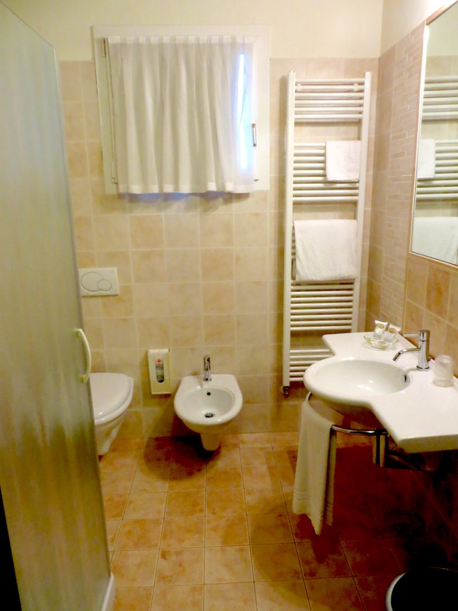
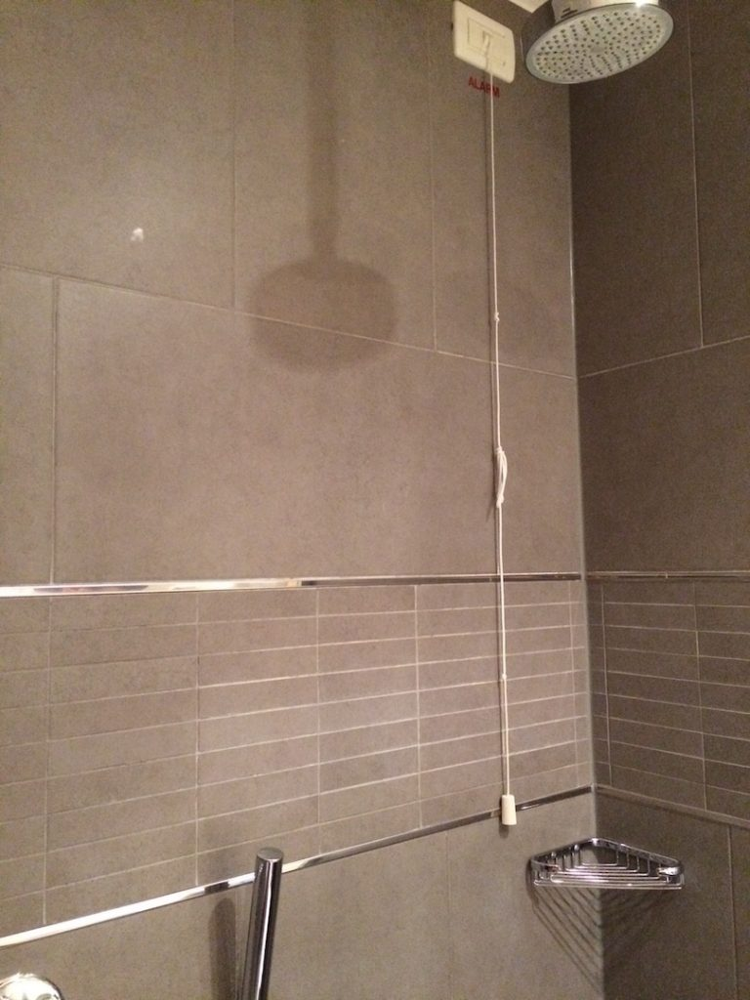

The bathroom of an Italian hotel
Hotel bathrooms are small and usually contain only a sink, a toilet, and a shower, sometimes (but not often) a bathtub. Showers and bathtubs may have a string attached to the wall to be used in case of emergencies (for example if you fall and need help). If you pull them by mistake (as my son once did) you will trigger an alarm, often very noisy. So, be aware of the strings!
Alarm string
{This is an excerpt from chapter 6 “Hotels and accommodations” of the eBook “Italy from the Inside. A native Italian reveals the secrets of traveling in Italy”. Buy our eBook on Amazon and leave us a review! If it’s good, you’ll make us happy, if it’s bad, you’ll make us improve. Thank you either way!}